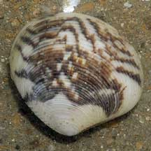
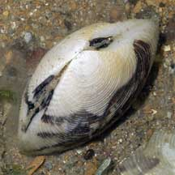
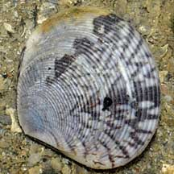

|
|
| bivalves text index | photo index |
| Phylum Mollusca > Class Bivalvia > Family Veneridae |
| Script
venus clam Circe scripta* Family Veneridae updated May 2020 Where seen? This clam is sometimes seen in sandy shores near seagrasses. Elsewhere, they are found on intertidal shores with sand. Features: About 4-6cm. Shell rather circular, flat, thick with fine concentric ridges. Colour white with various brown lines, often zig-zag patterns. |
|
 Tuas, May 07 |
 |
 Pulau Hantu, May 09 |
*Species are difficult to positively identify without close examination.
On this website, they are grouped by external features for convenience of display.
| Script venus clams on Singapore shores |
On wildsingapore
flickr
|
| Other sightings on Singapore shores |
|
Acknowledgements
References
|